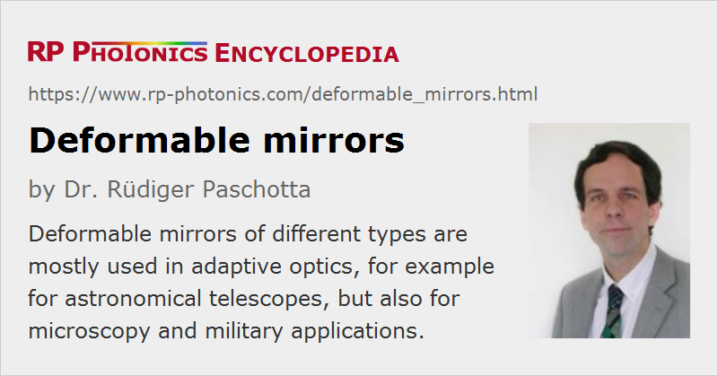

Deformable Mirrors
Definition: mirrors which can be deformed in a controlled manner, e.g. for wavefront correction in adaptive optics
More general term: mirrors
German: deformierbare Spiegel
Categories: general optics, vision, displays and imaging
How to cite the article; suggest additional literature
Author: Dr. Rüdiger Paschotta
Deformable mirrors are mirrors where one can deform the reflecting surface in a controlled manner such as to correct deformed wavefronts. Usually, one has a number of degrees of freedom between a few dozens and several thousands, achieved by using a corresponding number of actuators. Therefore, a deformable mirror can be used not only to compensate simple optical aberrations such as defocus and astigmatism, but also more complicated kinds of wavefront distortion. This is particularly important in the context of adaptive optics. However, there are also deformable mirrors with very few degrees of freedom, and even single-general devices, where only the focal length can be adjusted; they can be used in lasers, for example, or for autofocus functions of cameras.
Types of Deformable Mirrors
Different kinds of deformable mirrors have been developed. A first distinction is between segmented mirrors and mirrors with a continuous reflecting surface:
Segmented Mirrors
The reflecting surface of a segmented mirror consists of small rigid (not deformable) segments which can be separately moved (with one or several degrees of freedom). Movement of one mirror segment usually has a negligible effect on the other segments.
Between the mirror segments, they are necessarily some gaps, which cause some loss of light and also diffraction losses. Additional diffraction losses can arise when neighbored mirror segments are set such that a step arises on the surface. This is unavoidable when mirrors can be moved only up and down, as shown in Figure 1 (a), but there are also versions with three actuators per mirror, where each mirror can be tilted such that any steps are avoided or at least minimized.
Segmented mirror devices are often realized as micro-electromechanical systems (MEMS) on a silicon platform. That scalable technology platform makes it possible to produce mirrors with a large number of segments. The production cost can in principle be fairly low, but rises substantially with the number of segments, since more chip area is then required and the production yield may be reduced with the increasing likelihood of localized faults within a large device. MEMS technology is thus best suited for mirrors with a relatively small size, which can nevertheless have a large number of segments. A possible problem is that one usually requires an optical window for protecting the MEMS device against oxidation; that may be disturbing due to parasitic reflections despite anti-reflection coatings on the window.
Segmented mirrors are usually not used for applications requiring highest image quality, e.g. in astronomical imaging, but can be appropriate particularly where a small size and many degrees of freedom are important, possibly also the relatively low cost.
Continuous Surface Mirrors
Deformable mirrors can also be made with a continuous deformable mirror surface (see Figure 1 (b)), below which suitable actuators are mounted. For example, the deformable surface can be a thin glass sheet, on which a metallic or dielectric coating is placed. Actuators can exert forces on the back side of the glass sheet such that the desired deformation is achieved.
With this type of deformable mirror, some coupling effects are unavoidable: each actuator does not only affect the geometrical shape in its immediate vicinity, but in a somewhat larger area, overlapping with that of neighbored actuators. This is not necessarily a problem, however, e.g. when the voltage is applied to the actuators are properly calculated with computer software, which can take into account the coupling. In some other cases, feedback systems solve that problem.
Due to the continuous surface, the optical quality of such a mirror can be very high, and the losses of optical power can be very small, particularly when using a dielectric coating.
The first kind of continuous surface deformable mirror, proposed by Horace W. Babcock when introducing the idea of adaptive optics, was the eidophor. Here, a thin layer of oil is placed on the mirror surface and modified in shape through electrostatic forces. That type of deformable mirror, however, turned out not to be very practical, as it exhibited a high sensitivity to environmental influences, a slow reaction and high chromatic dispersion. (Note that the term eidophor is also used for a kind of television projector, which also works with an electrostatically actuated oil film.)
Actuators
Different kinds of actuators can be used in deformable mirrors:
- There are piezo actuator columns, which can have a cylindrical shape and can expand or contract in the longitudinal direction, i.e., along the cylinder axis. Multiple piezoelectric elements (made from a ferroelectric material like lead zirconate titanate = PZT ceramic) are stacked on top of each other to obtain a large enough stroke. In a stacked array deformable mirror, an array of such actuators is mounted between a rigid base plate and the deformable mirror surface as shown in Figure 1 (b). The piezo actuators can exert substantial forces, but are limited to a relatively small travel range, e.g. a few microns or a few tens of microns. Other piezo actuators are mounted in bimorph mirrors such that they expand or contract in a direction in the plane of the mirror surface; that way, one controls the local bending rather than the local position.
- Instead of piezoelectric materials, one sometimes uses non-poled ceramics like PMN = lead magnesium niobate, which exhibit a quadratic electrostrictive effect. With additional drive electronics, one can linearize the response.
- There are electrostatic actuators, e.g. in MEMS-based devices, which can exert only rather small forces. These are not sufficient for bending a glass plate, for example, but can be suitable for moving tiny mirror segments in segmented mirrors. Also, there are mirror membranes with an electrically conductive coating, which can be actuated electrostatically. The travel distance (stroke) is proportional to the square of the applied voltage; that nonlinearity may have to be corrected, possibly with additional on-chip electronics. The required drive voltages are often a few hundred volts, but the required currents are very small.
- There are voice coil motors, in principle similar to those used in loudspeakers, where an electric current through a coil controls the attraction or repulsion of a permanent magnet fixed to the back side of the deformable mirror surface. Such electromagnetic actuators are particularly used for large deformable mirrors, where the spacing of actuators can be several centimeters. They can produce substantial bending forces, but also require substantial electrical powers, which may make active cooling necessary.
- Another solution is to use ferrofluids, which can be actuated with a magnetic field [8]. Such a fluid can contain ferromagnetic nanoparticles. The surface shape of the mirror is determined by the interaction of magnetic forces, gravitation and surface tension. Such mirrors can be used only in an approximately horizontal orientation.
- Low-cost devices may also be based on thermal actuators [6]. These are very much limited in speed, but sufficient for some applications.
Devices with Position Sensors and Feedback Control
Some kinds of deformable mirrors contain an array of position sensors with which one continuously monitors the obtained position and corrects it with an electronic feedback loop, e.g. one for each actuator. More sophisticated realizations calculate the suitable pattern of drive signals, taking into account the mechanical coupling, with a digital signal processor.
Such feedback loop techniques are particularly used for large deformable mirrors based on voice coil motors, as used in large astronomical telescopes. Here, the mirror plate can float above the actuator array, held in the wanted position by the generated magnetic fields of the coils. The feedback loop leads to a high effective axial stiffness of the actuators. Optimized systems can achieve a response time of the order of 1 ms. However, such specialized systems are quite delicate to engineer and correspondingly expensive.
Design Parameters and Performance Figures of Deformable Mirrors
The following parameters can be relevant for the applications of deformable mirrors:
Size of Reflecting Area
Deformable mirror devices with very different sizes have been developed. Some of them are rather small, for example MEMS devices with a mirror diameter of only a few millimeters, while others have diameters of tens of centimeters. Large deformable mirrors are used mostly as a secondary mirrors (or possibly even as primary mirrors) in astronomical telescopes, where the use of a small deformable mirror is not possible, because the optical system would then exhibit an unacceptable amount of aberrations.
The reflecting surface has a circular shape in most cases, although one also realize rectangular deformable mirrors.
Number of Actuators
The number of actuators determines the number of the degrees of freedom with which the mirror surface can be deformed. In some cases, a moderate number of e.g. 16 is sufficient (e.g. for a telescope with moderate size), while in other cases hundreds or even several thousand actuators are required (e.g. for large astronomical telescopes). In the future, one may even use devices with tens of thousands of actuators. The higher the number of actuators, the more complicated types of optical aberrations can be compensated – for example, aberrations corresponding to very high order Zernike polynomials.
Actuator Pitch
The pitch (horizontal spacing) of the used actuators limits the transverse spatial resolution. Some kinds of actuators allow realizations with a very small actuator pitch, so that a large number of actuators can be accommodated within a relatively small mirror device. That is particularly the case for micro-electromechanical systems (MEMS).
Tentatively, small pitch values of continuous surface mirrors can be realized only in conjunction with a limited mechanical stroke (see below), since the mirror surface cannot be bent arbitrarily.
Large deformable mirrors (e.g. used as secondary mirrors in astronomical telescopes) often do not require particularly small actuators; pitch values of several millimeters or sometimes even centimeters are appropriate. Electromagnetic solutions like voice coil motors are then often used.
Maximum Mechanical Stroke
For a segmented mirror device, it is easy to define the maximum stroke, i.e., the maximum travel range for each mirror. That determines the maximum strength of aberrations which can be compensated. In many cases, one requires a maximum stroke between a few micrometers and some tens of micrometers.
For mirrors with a continuous surface, this limitation is more difficult to fully specify. For example, there may also be a limit to the height difference between neighbored segments or for the curvature due to the stiffness of the mirror membrane. Stroke specifications may ignore such limitations and then apply only to wavefront corrections with moderate orders.
In some applications, tip and tilt as the lowest-order aberrations are compensated with a separate tip/tilt mirror in order to limit the required stroke from the deformable mirror.
Influence Functions
One can define a set of influence functions which describe the resulting mirror surface shape as the response to the action of a single actuator. From those functions, one can derive the possible spatial resolution and further details like the coupling; most importantly, one can use them to calculate the required pattern of actuator signals to achieve a certain wanted mirror shape. This calculation may be done with fast digital signal processors.
Wavefront Precision
Apart from the transverse spatial resolution, it is often important to very precisely control the magnitude of optical phase changes. The variance of the optical phase change often needs to be far below 1 rad2, sometimes even 0.1 rad2. That corresponds to position deviations far below 1 μm.
Particularly for piezo-based actuators, hysteresis and creep phenomena can limit the achieved position. Therefore, low-hysteresis actuators must be chosen, even though they offer tentatively lower stroke.
Speed
There is a limited speed with which the mirror deformation can be changed – it may be limited by the types of actuators or (more frequently) by resonances of the whole mechanical construction. Highest speeds are achieved when using lightweight and relatively stiff materials. The fastest deformable mirrors can be positioned in well below 1 ms. Note that the maximum possible bandwidth of an adaptive optics feedback loop is typically an order of magnitude lower than the bandwidth of the used deformable mirror alone.
Drive Voltage and Power Consumption
While electromechanical actuators require only small voltages but substantial currents, piezo-type and electrostatic attenuators require large drive voltages but only small currents. All of them require only low electrical powers.
Electromagnetic drives, however, often require substantial currents and electrical powers. The coils are then substantially heated, so that active cooling of the device may be necessary. In some astronomical mirrors with voice coil drives, the dissipated power can be several kilowatts.
Optically Addressed Deformable Mirrors
For deformable mirrors with a large number of actuators, it can be challenging to supply all the actuators with the required signals – particularly if the wires need to carry substantial electrical currents. Therefore, optically addressed devices are under development, where the signals for the actuators are provided via light. Such a device may contain photoconductive detectors for forming the drive signals to the actuators.
Applications of Deformable Mirrors
Astronomy
Deformable mirrors have originally been developed for adaptive optics in astronomical imaging. Here, their purpose is the compensation of optical aberrations caused by turbulences in the atmosphere. The basic idea has already been suggested by Horace W. Babcock in 1953 [1], but it took about two decades to develop first prototypes, since besides the deformable mirrors one also required sensitive wavefront sensors and substantial computing power for driving the mirrors with a high enough speed.
Microscopy
Some methods of microscopy can also profit from adaptive optics with deformable mirrors. This is particularly in cases where additional optical aberrations are introduced by the sample itself when taking images in a substantial depth, rather than in an ultrathin specimen. For example, there are methods of fluorescence microscopy, where wavefront distortions from layers of the sample are measured using fluorescent beads. For the compensation, one would typically use either a MEMS-based deformable mirror or a liquid crystal modulator.
Military Applications
There are also military applications of adaptive optics where deformable mirrors are used. For example, one can pre-compensate wavefront distortions of laser beams sent through the atmosphere over large distances in order to obtain a sharper focus. Also, there are various imaging applications.
Pulse Shapers
Deformable mirrors can also be used in some kinds of pulse shapers, where they effectively act as spatial light modulators. Here, different spectral components are sent to different locations on the mirror, and by modulating the elevation of the mirror parts one essentially creates controlled wavelength-dependent changes of optical phase, i.e., changes of the spectral phase of ultrashort pulses. See the article on pulse shapers for more details.
Laser Optimization
Even a single-general deformable mirror in a laser resonator can be useful for optimizing the properties of resonator modes – for example, dynamically compensating the effect of thermal lensing. A few more degrees of freedom could also be used for compensating optical aberrations of the thermal lens. Such an intracavity mirror will usually have to withstand substantial optical powers; some deformable mirrors are suitable for that.
Suppliers
The RP Photonics Buyer's Guide contains 18 suppliers for deformable mirrors.
Questions and Comments from Users
Here you can submit questions and comments. As far as they get accepted by the author, they will appear above this paragraph together with the author’s answer. The author will decide on acceptance based on certain criteria. Essentially, the issue must be of sufficiently broad interest.
Please do not enter personal data here; we would otherwise delete it soon. (See also our privacy declaration.) If you wish to receive personal feedback or consultancy from the author, please contact him e.g. via e-mail.
By submitting the information, you give your consent to the potential publication of your inputs on our website according to our rules. (If you later retract your consent, we will delete those inputs.) As your inputs are first reviewed by the author, they may be published with some delay.
Bibliography
| [1] | H. W. Babcock, “The possibility of compensating astronomical seeing”, Publ. Astron. Soc. Pac. 65, 229-236 (1953) |
| [2] | K. Uchino et al., “Deformable mirror using the PMN electrostrictor”, Appl. Opt. 20 (17), 3077 (1981), doi:10.1364/AO.20.003077 |
| [3] | R. H. Freeman and J. E. Pearson, “Deformable mirrors for all seasons and reasons”, Appl. Opt. 21 (4), 580 (1982), doi:10.1364/AO.21.000580 |
| [4] | J. G. R. Hansen, R. M. Richard, and R. R. Shannon, “Deformable primary mirror for a space telescope”, Appl. Opt. 21 (14), 2620 (1982), doi:10.1364/AO.21.002620 |
| [5] | K. Nemoto et al., “Optimum control of the laser beam intensity profile with a deformable mirror”, Appl. Opt. 36 (30), 7689 (1997), doi:10.1364/AO.36.007689 |
| [6] | G. Vdovin and M. Loktev, “Deformable mirror with thermal actuators”, Opt. Lett. 27 (9), 677 (2002), doi:10.1364/OL.27.000677 |
| [7] | E. Dalimier and C. Dainty, “Comparative analysis of deformable mirrors for ocular adaptive optics”, Opt. Express 13 (11), 4275 (2005), doi:10.1364/OPEX.13.004275 |
| [8] | P. Laird et al., “Ferrofluidic adaptive mirrors ”, Appl. Opt. 45 (15), 3495 (2006), doi:10.1364/AO.45.003495 |
| [9] | J.-H. Lee, Y.-C. Lee and E.-C. Kang, “A cooled deformable bimorph mirror for a high power laser”, J. Opt. Soc. Korea 10 (2), 57 (2006) |
| [10] | D. Brousseau, E. F. Borra and S. Thibault, “Wavefront correction with a 37-actuator ferrofluid deformable mirror”, Opt. Express 15 (26), 18190 (2007), doi:10.1364/OE.15.018190 |
| [11] | H.-T. Hsieh et al., “Thin autofocus camera module by a large-stroke micromachined deformable mirror”, Opt. Express 18 (11), 1197 (2010), doi:10.1364/OE.18.001197 |
| [12] | W. Liu et al., “A Zernike mode decomposition decoupling control algorithm for dual deformable mirrors adaptive optics system”, Opt. Express 21 (20), 23885 (2013), doi:10.1364/OE.21.023885 |
| [13] | P.-Y. Madec, “Overview of deformable mirror technologies for adaptive optics and astronomy”, Proc. SPIE 8447, Adaptive Optics Systems III; 844705 (2012), doi:10.1117/12.924892 |
| [14] | S. Piehler et al., “Deformable mirrors for intra-cavity use in high-power thin-disk lasers”, Opt. Express 25 (4), 4254 (2017), doi:10.1364/OE.25.004254 |
See also: mirrors, wavefronts, fluorescence microscopy, pulse shapers
and other articles in the categories general optics, vision, displays and imaging
|  |
If you like this page, please share the link with your friends and colleagues, e.g. via social media:
These sharing buttons are implemented in a privacy-friendly way!